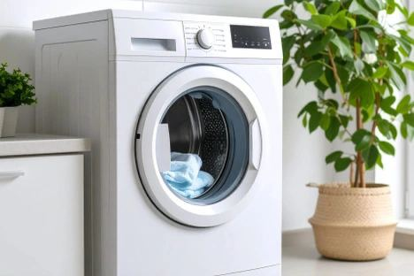
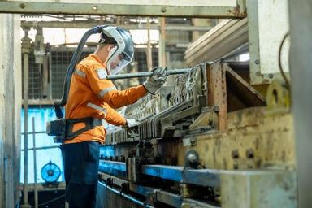

DT360


Nội vụ và Chính sách

Giá vàng hôm nay
BẢO TÍN MẠNH HẢI
Nhẫn Tròn ép vỉ (Kim Gia Bảo ) 24K (999.9)
Mua vào
13.710.000Bán ra
14.100.000
Cập nhật: 08:34 - 29/07/2026
Đơn vị: đồng/chỉ
Theo Tổng Bí thư, Chủ tịch nước Tô Lâm, phương án đề xuất điều chỉnh địa giới hành chính phải khoa học, thận trọng, phục vụ mục tiêu và kiên quyết loại bỏ tư tưởng “thuận cán bộ, khổ nhân dân”.
BẢO TÍN MẠNH HẢI
Mua vào
13.710.000Bán ra
14.100.000Ban Chỉ đạo liên ngành Trung ương về thu hồi tài sản vụ Vạn Thịnh Phát vừa được bổ sung lãnh đạo cấp cao...
Trung ương quy định việc thí điểm Bộ Chính trị chỉ định Bí thư, Phó Bí thư, Ủy ban Kiểm tra, Chủ nhiệm...
Theo các chuyên gia, quan sát màu nước tiểu là thói quen đơn giản nhưng có thể cung cấp những tín hiệu quan trọng...

Máy giặt bỗng kêu to, quần áo giặt mãi không sạch hay liên tục báo lỗi có thể không chỉ là sự cố nhỏ...

MSR lãi 1.666 tỷ đồng quý II: Thành quả xây dựng nền tảng gần hai thập kỷTrong đầu tư, có những cột mốc không chỉ phản ánh kết quả của một quý, mà còn đánh dấu sự thay đổi của...
Chức danh được sử dụng thường xuyên một ô tô trong thời gian công tác, không quy định mức giá, gồm: Ủy viên Bộ...

Gần 90 năm đi qua chiến tranh, thăng trầm, người con gái duy nhất của cố Tổng Bí thư Lê Hồng Phong vẫn sống...

Giải ASEAN Cup 2026 không tính thành tích kiến tạo vào cuộc đua Vua phá lưới như World Cup 2026. Điều đó khiến Đình...
Đêm bán kết Miss Grand Vietnam 2026 mang đến nhiều màn trình diễn gây chú ý. Trong đó, phần catwalk cùng một con trăn...

Quả mít nặng 50kg ở Bắc Ninh, mỗi năm cây cho 1-2 trái. Cây mít này đã được trồng từ năm 2010 và hiện đang...
 Tiêm PRP điều trị thoái hóa khớp: Thực tế nhiều người cần biết
Tiêm PRP điều trị thoái hóa khớp: Thực tế nhiều người cần biết
Ngày càng nhiều người bị thoái hóa khớp tiêm PRP với những kỳ vọng trong điều trị. Tuy nhiên,...
Dự án dinh thự Noble Palace Tay Ho chuẩn bị bàn giao cùng sổ đỏ trao tay từ quý III. Trong bối cảnh người...
Đạo diễn nổi tiếng của điện ảnh Hàn Quốc, người đứng sau thành công của bộ phim "Người tình", đã qua đời...
Đội tuyển quốc gia đã có một màn trình diễn xuất sắc, giành chiến thắng quan trọng trước đối thủ mạnh...
Việt Nam nổi tiếng với nền ẩm thực phong phú, mỗi vùng miền đều có những món ăn đặc sản riêng...
Năm 2026 hứa hẹn mang đến nhiều xu hướng công nghệ mới, từ trí tuệ nhân tạo đến các thiết bị thông minh...
Để đạt được kết quả tốt trong học tập, sinh viên cần áp dụng các phương pháp học tập hiệu quả và...